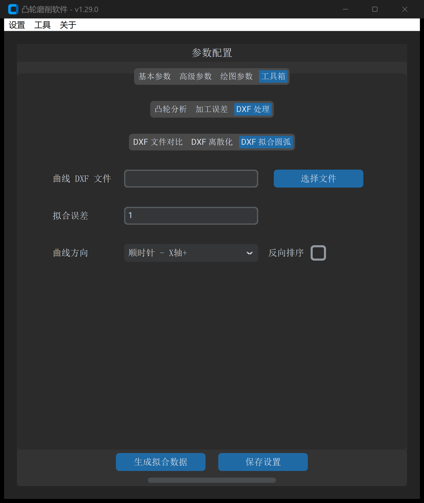

DXF 拟合圆弧
“DXF 拟合圆弧”工具用于将由数千至数万个微小直线段构成的密集离散凸轮轮廓，在严格保证几何公差的前提下，通过数学优化算法智能合并拟合为由最少数量的圆弧（Arc）与直线（Line）组成的切向连续轮廓。
1. 操作界面与参数布局
打开主界面并切换至 工具 -> DXF 处理 -> DXF 拟合圆弧：

2. 参数定义与配置说明
| 参数项 | 字段标识 | 推荐设置 | 详细说明与工程含义 |
|---|---|---|---|
| 凸轮曲线文件 | dxf_file_path |
必填 | 待拟合的离散凸轮 DXF 轮廓文件路径 |
| 拟合误差 | fit_arcs_accuracy |
1.0 |
几何逼近公差阈值（基准单位：）： • 设置为 1.0 对应实际最大残差 （）；• 设置为 5.0 对应最大残差 ；• 数值越小越逼近原图，但圆弧段数会相应增加； 1.0 为高精度磨削推荐平衡值 |
| G 代码反向 | g_code_reverse |
默认不勾选 | 勾选后，若输出数控加工代码，将把圆弧插补指令中的 G02（顺圆）与 G03（逆圆）进行全局对调 |
| 输出路径 | output_path |
必填 | 拟合生成的精简圆弧 DXF 轮廓或 NC 代码保存路径 |
3. 算法特性与数控优势
3.1 Numba JIT 高性能双向公差带拟合
软件底层集成由 Numba 预编译的高性能几何拟合内核（calc.py）：
- 自适应贪婪合并：从基准点出发，向后动态扩展测点区间，通过最小二乘法实时求取局部最佳拟合圆心与半径；
- 极值残差拦截：只要当前段内任何单个测点到拟合圆弧的径向法向距离超过给定的“拟合误差”，立即截断当前圆弧，平滑开启下一段圆弧的搜索与求解；
- 一阶切向平滑衔接：在圆弧与圆弧、圆弧与直线的过渡节点，强制执行切向斜率约束，消除拐点折角。
3.2 离散点 vs 圆弧拟合性能对比
| 指标维度 | 密集离散短线段（G01） | 智能拟合圆弧（G02/G03） |
|---|---|---|
| 程序代码行数 | 3,600 ~ 10,000 行冗长代码 | 仅需 40 ~ 80 行圆弧指令 |
| 程序文件体积 | 几百 KB ~ 数 MB | 小于 10 KB（压缩率达 90% 以上） |
| 数控前瞻处理速度 | 易引发插补缓冲区欠刀降速 | 数控系统前瞻极度轻松，运行高速流畅 |
| 工件表面微观光洁度 | 存在微观多边形多面棱面折线 | 理论曲率连续圆润，达到镜面磨削效果 |
4. 操作与成果验证
- 导入待拟合的 DXF 文件，设置拟合误差为
1.0； - 指定保存路径，点击 生成拟合数据；
- 生成完毕后，可配合 DXF 文件对比 工具，将原始离散 DXF 与拟合后的圆弧 DXF 叠加比对，并在高倍放大下核验关键拐点区域的贴合度。